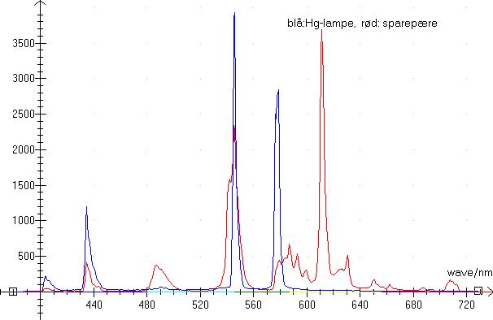
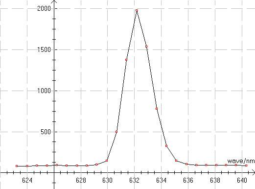

Menu i Datalyse
Emission, fx spektret fra en spektrallampe
Indstil... Vælg tid pr scan og Retur for hver måling.
Baggrund, dvs spektrum uden belysning
Reference, spektrum fra celle med vand
Absorbans
Spektrofotometret er forsynet med et CCD-array og kan måle bølgelængder i intervallet 305 nm til 1050 nm. Et lyslederkabel på 1.5 meter transmitterer lyset fra kilden til apparatet.
Absorbans kan måles, idet lyset fra en indbygget halogenlampe via endnu et lyslederkabel kan sendes ind i en ekstern celleholder.
Spektrofotomeret kan kun scanne spektret. Det kan ikke måle ved en enkelt bølgelængde. Men et scan med 1024 værdier måles på kun 2 sekunder (1 sekund). Man får altså hele spektret på skærmen. Det virker meget tillokkende.
En måling tager alligevel lidt tid, for CCD er ikke støjfri, dvs. de måler lys, selv uden belysning.
En måling består derfor af følgende målinger:
1: Mål baggrund (ændres måletiden, skal man måle ny baggrund).
2: Mål Emission, baggrunden (søjle 2 i tabellen) fratrækkes.
3: Mål reference, dvs. mål på en celle med vand. Baggrunden fratrækkes, og reference spektret anbringes i søjle 3 i tabellen.
4: Mål absorbans. Absorbansen udregnes vha. målte værdier og referencen.
CCD'er og lysledere er fremtiden, men alligevel er der et par forbehold ved apparatet.
Et kontinuert spektrum fx fra en lommelampepære eller den indbyggede halogenlampe er ikke kontinuert, men underligt toppet. Det kan ikke være rigtigt!
Der er i øjeblikket problemer med nogle af koderne til den serielle kommunikation.
Sparepære + Hg-lampe

Hvilke(n) gas(ser) er der i en sparepære? Hg-er der vist ikke tvivl om.
Bemærk, at Datalyse nu kan vise flere grafer samtidigt. Dels kan man i tabellen afmærke flere søjler til graftegning. Dels kan man for 2 apparater vælge mellem graf og tabel.
He-Ne laser

Dette er et scan af en He-Ne laser.